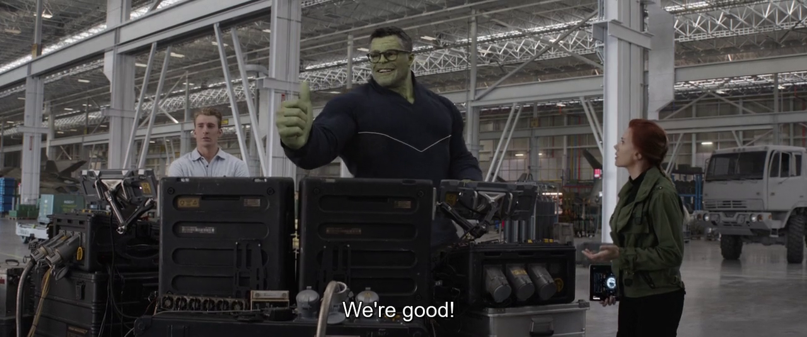
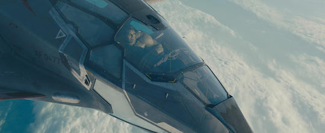

Full Name: Bruce Banner
Place Of Birth: New York
Alignment: Good
Gender: Male
Race: Gamma-Human
Intelligence: 100%
Strength: 100%
Speed: 100%
Durability: 100%
Power: 100%
Combat: 100%
Bioscience genius Dr. Bruce Banner working together with Dr. Betty Ross at a Virginia University lab focused on the effects of gamma radiation on humans. Unaware to both doctors, Dr. Ross’ father, General “Thunderbolt” Ross of the U.S. Army, channeled their work into a program to develop weapons for the military. When Banner decided to test what he learned on himself, he triggered a fantastic transformation in himself that resulted in an immense, hulking figure fueled by his own rage. In the aftermath of Banner’s first rampage, Banner slipped away to avoid capture and study by the Army and began a desperate quest for a cure to his bizarre affliction.
As intelligent as Bruce Banner is, his alter-ego the Hulk is as incredible strong. The green behemoth possesses the greatest raw strength of any living creature on Earth, with an limit that has yet to be found.The Hulk has grown somewhat more intelligent over the years, beginning with the mind of nearly an infant and progressing to what might be described as the personality of a toddler, and finally that of a full grown adult.
|

|

|